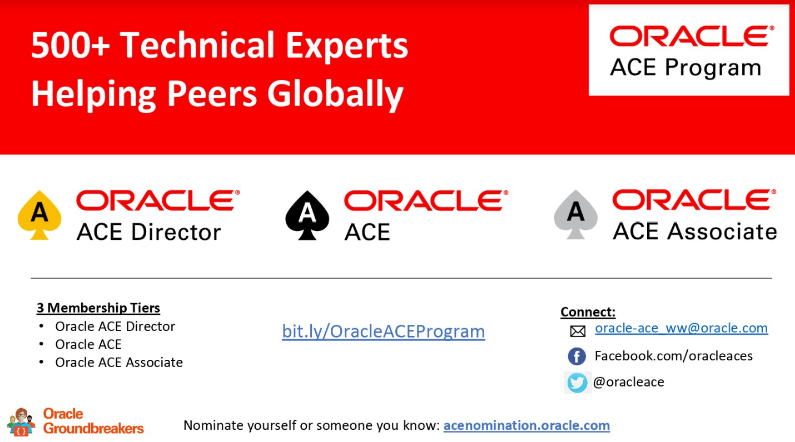

This was first published on https://www.dbi-services.com/blog/oracle-ace-program/ (2020-06-24)
Republishing here for new followers. The content is related to the versions available at the publication date.
.
I had a few questions about the Oracle ACE program recently and I thought about putting some answers there. Of course, that’s only my point of view, there’s an official web page: https://www.oracle.com/technetwork/community/oracle-ace/index.html
The program is flexible and open, with a large diversity of people, technologies, contributions, levels,… Then rather than explaining what it is, which would be limiting, I’ll rather tell you… what it is not.
You may have heard about “ACE points”. When I entered the ACE program it was running for a long time with a subjective evaluation on the contributions in the Oracle community. Then it became more structured with a clear list of activities that are recognized, an application (APEX of course) to fill-in the contributions, and points to rate them. But the goal is not to get the highest score. The reason for this point system is to be sure that all contributions are accounted to determine your level of contribution.
Typically, you enter as an ACE Associate by listing a few blog posts, or presentations you did. Then you contribute more, maybe writing an article, giving more presentations, or being active on Oracle forums. You list all that and after a while, you may reach a number of points where they will evaluate an upgrade to the ACE level. Do not see this “more contributions” as a constraint. The goal of the program is to open new doors for contributing further. Being in the ACE program will help you to be selected for conferences, to meet Product Managers from Oracle, to know more people in the user community,… And you will realize that there are many more contributions that can count. You may realize that public-facing activities are not your preference. But at the same time, you will discuss with some product managers and realize that some code contribution, SR’s or Enhancement Requests are also recognized contributions. Some people do not want to talk at conferences but volunteer in their User Groups or organize meetups. That counts as well, and the idea raises when meeting people (physically or virtually). You may write a few chapters for a book on a technology you like with people you appreciate. You may meet people contributing to the Oracle Dev Gym. You may also realize that you like public-facing sharing and try to produce, in addition to presentations, some videos or podcasts. All that is accounted thanks to the points system.
Depending on your motivation, and the time you have, you may go further, to the ACE Director level. Or not, because you don’t have to, but I will come back on this later. I was not in the program for a long time when the “points” system was introduced, so I may be wrong in my opinion. But my feeling is that it was easier to enter the program when going physically to the main conferences and drinking a beer with influential people. Some contributions were highly visible (like speaking on mainstream technologies) and some were not. If you did not travel and do not drink beer, entering the program to high levels were probably harder. I think that the “points” system is fairer, bringing equality and diversity. And that the additional time to enter the contributions worths it.
The ACE program is not a technical validation of your knowledge like the Oracle Educations exams are. You don’t even get “points” for being Oracle Certified Master. Of course, valuable contributions are often based on technical skills. But all conferences miss good sessions on soft skills and sessions on basics for beginners. Of course, it is cool if you go deep into the internals of an Oracle Product, but you may have a lot to share even if you are a junior in this technology. Just share what you learned.
You don’t need to be an expert on the product, but you cannot give a valuable contribution if you are not using and appreciating the product. This is still a tech community that has its roots in the Oracle Technology Network. You share in the spirit of this community and user groups: not marketing but tech exchanges. You are there to help the users and the product, and the communication around those. You are not there to sell any product, and you will realize the number of people contributing about free products. Oracle XE, SQL Developer, MySQL, Cloud Free Tier, Oracle Linux,… those are valuable contributions.
Of course, the ACE program has some budget that comes from marketing. And yes, you get more “points” when contributing to “cloud” products because that’s where all priorities are at Oracle Corp, and this includes the ACE program. But do not take it like “I must talk about the cloud”. Just take it as “cool, I got more point because I contributed to their flagship product”. If you contribute for points only, you are wrong. You will be tired of this quickly. Just contribute on what you like, and points will come to recognize what you did and encourage you to go further.
I mentioned that you can contribute on any Oracle products, paid or free, and there are a lot. You don’t need to talk about the database. You don’t need to talk about the cloud. You don’t need to talk about expensive options. The ACE program is flexible and this is what allows diversity. Depending on your country, and depending on your job, or simply on you motivation, you may have nothing to share about some products that are common elsewhere. Some consultant have all their customers on Exadata, and have a lot to share about it. Others have all their databases in Standard Edition and their contributions are welcome as well.
I’ll be clear if you have some doubts: I have never been asked to talk or write about anything. All are my choices. And I have never been asked to change or remove some published content. And my subjects also cover problems and bugs, because I consider that it helps to share them as well. Actually, I’ve deleted a tweet only two times because of feedback from others. And the feedback was not to ask me to take it down but just to mention that one word may sound a little harsh, And I checked my tweet, and I agreed my wording was not ok, and then preferred not to leave something that could be interpreted this way. Two times, and it was my choice, and I’m at 20K tweets.
The ACE levels I’ve mentioned (ACE Associate, ACE, ACE Director) are not Nobel prizes and are not granted for life. They show the level of current and recent contributions. If you do not contribute anymore, you will leave the program as an ACE Alumni. And that’s totally normal. The ACE program is there to recognize your contributions and helps you with those. You may change you job and work on different technology, lose your motivation, or simply don’t have time for this, and that’s ok. Or simply don’t want to be an ACE. Then it is simple: you don’t enter enough contributions in the “points” application and at next evaluation (in June usually) you will be ACE Alumni.
I have an anecdote about “don’t want to be an ACE”. The first nomination I entered, I did it for someone who contributed in his way (no public-facing but organizing awesome events). And I did it without telling him. I was excited to see his surprise, and he was accepted. But he told me that he didn’t want to be an ACE Associate. Sure I was surprised, but that’s perfectly ok. There’s no obligation about anything. Now, If I want to nominate someone I ask before 😉
I am an ACE Director, I have a lot of points, but I do not write or do anything with points in mind. The “points” are just a consequence of me writing blog posts and presenting at conferences. I contributed only on those two channels in 2019-2020. The year before I had more point, with some articles, and SR (bugs discussed with the product managers). In the coming year, I may try something else, but again not thinking about points. I work also on non-Oracle technologies, even competing, because that’s my job. But for sure I’ll continue to contribute a lot on Oracle Product. Because I like to work with them, with Oracle Customers, with Oracle employees,… And then there are good chances that I’ll stay in the program and at the same level. But please, understand that you don’t need to do the same. By the location where I am (with many meetups and conferences organized), by the company I work for (where knowledge sharing is greatly encouraged), and the time I can find (kids becoming more and more autonomous), I’m able to do that. That’s what I like in this program: people do what they can do and like to do, without any obligation, and when this meets some ACE levels of recognized contributions, the ACE program encourages and helps to continue. 